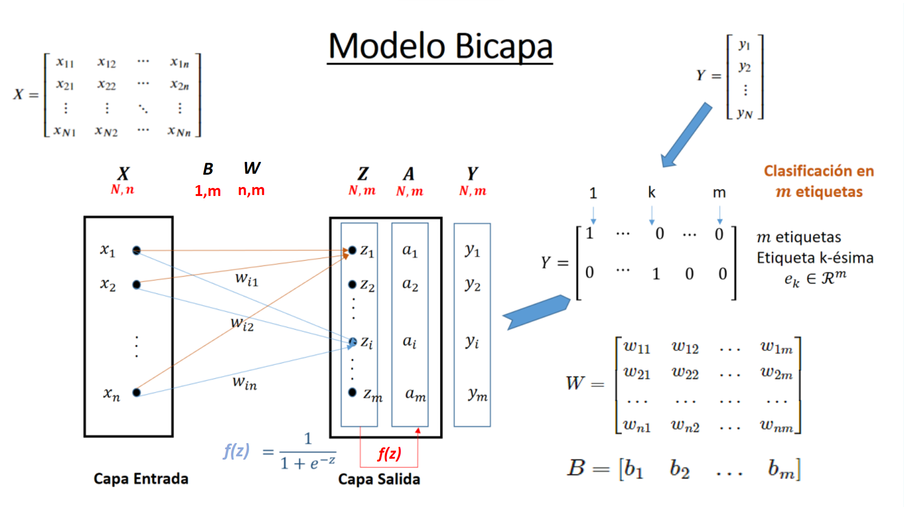
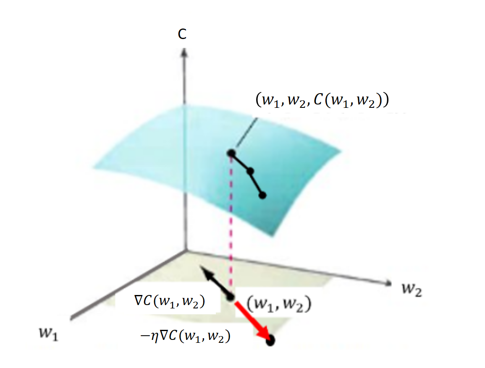

Redes Neuronales - Modelo Bicapa#
import pandas as pd
from IPython import display
import numpy as np
Fundamento matemático del perceptrón simple bicapa#
[Rosenblatt, 1958] introdujo el perceptrón simple formado por dos capas, una de entrada con n neuronas y una de salida con m neuronas. [Widrow and Hoff, 1960] introdujeron el modelo ADAptative LInear Neuron (Adaline) tambien bicapa. Los modelos bicapa tienen la siguiente forma
Dada 1 observación \(\bar{x}=(x_1,...,x_j, ..., x_n)\) de la que se conoce su clase en formato one-hote \(\bar{y}=(y_1,...,y_i, ...y_m)\)
Primero se efectua una ponderación lineal \(\bar{z}=(z_1,...,z_i, ..., z_m)\) de la que se obtiene la salida \(\bar{a}\) aplicando una función de activación:
Se puede decir que existen \(n\) neuronas de entrada y \(m\) neuronas de salida. La ponderación lineal en las neuronas de salida a partir de los pesos se calcula:
Hacen falta \(m \times n\) pesos y \(m\) bias para definir la red, que se en forma matricialmente son:

{kind=link}
La configuración de la red (\(W\) y \(B\)) minimizará una función de coste \(C\) para que la activación \(\bar{a}\) se ajuste a la clase real \(\bar{y}\) del conjunto de entrenamiento. Una de las funciones de coste que se utiliza es el error cuadrático, que para 1 observación se calcula:
Y como se cumple que
De acuerdo al gradiente descenso, conocidos unos valores de las componentes \(w_{ij}\) y \(b_i\) de la configuración de la red, su valores tienden a un mínimo local restando sus gradientes:
Los gradientes respecto \(w_{ij}\) se obtienen derivando \(C\) y aplicando sucesivamente la regla de la cadena:
De igual forma con respecto a \(b_i\)
Se denomina tasa de variación del error cuadrático por unidad de activación al valor:
Con lo que se tiene:
Se puede repetir vectorialmente el impacto que tiene en el entrenamiento de la red 1 observación \(\bar{x}\).
Así, el resultado de la ponderación lineal y su posterior activación es:
Que permite obtener el vector \(\bar{\delta}\)
Donde \(\odot\) es el producto Hadamard o producto componente a componente entre dos vectores.
Por tanto se puede decir que:
Usando el valor calcualdo de \(\bar{\delta}\) y el valor de la observación \(\bar{x}\) se actualiza la matriz \(W\) de pesos de la siguiente forma:
De igual forma se obtiene:
Siendo el gradiente de C respecto de W y B:
Resolución matricial, proceso en bloque#
Proceso hacia adelante o Forward: dada una matriz \({\large X}\) de N registros que entran a la neurona y dados unos pesos y bias definidos en las matrices \({\large W}\) y \({\large B}\), se tendrá la siguiente salida de forma matricial:
El anterior resultado se extrae facilmente considerando que el proceso forward de una observación \(\bar{x}\) se obtiene matricialmente, con los vectores \(\bar{x}\), \(\bar{z}\) en columna:
O en fila:
Si en la anterior expresión añadimos todas las observaciones en filas, pasamos del vector \(\bar{x}\) a la matriz \(X\) y la salida será también una matriz \(Z\) con las ponderaciones fila a fila de las \(N\) observaciones. Sólo resta definir \(\oplus\) como una operación sobrecargada que suma \(b_i\) a cada columna de la matriz resultante del producto \(X \cdot W^T\)
La salida activada \(A\) se obtiene aplicando la función de activación a la matriz \(Z\):
El error neto entre los valores reales \({\large Y}\) y los activados en el paso anterior de la neurona vendrán dados por
Matriz \({\large \Delta}\): La tasa de variación del error cuadrático por unidad de entrada (o por unidad de activación):
En la obtención de la matriz \({\large \Delta}\) se utiliza el producto de Hadamard (\(\odot\)).
Por tanto se puede decir que:
Entrenamiento: Es posible entrenar el perceptrón en T etapas, partiendo de valores aleatorios en las matrices \(W\) y \(B\) en \(t=1\), de forma que estas matrices en sucesivos \({\large t}\) adoptarán:
Siendo \({\large 1}\) una matriz columna de \(N\) unos que realiza el sumatorio de las filas de \(\Delta ^T\)
Siendo el gradiente de C respecto de W y B:
Observaciones#
La matriz \({\large X}\) tiene dimensiones (N,n): \(N\) filas (observaciones) de \(n\) características cada una.
Las matrices \({\large Z, A, \Delta}\) tiene dimensiones (N,m), tantas filas como las observaciones del conjunto de entrenamiento y tantas columnas como neuronas de salida \(m\). El número de neuronas de salida coincide con el número de clases.
Una de las funciones de activación primeras que se usaron fuero la sigmoidea o lógistica
El gradiente descenso se basa en que el vector gradiente define en el dominio de una función de varias variables \(f(\bar{x})\) la dirección de máximo incremento de la pendiente. De forma que se toma signo negativo para ir hacia un mínimo local y un valor de magnitud reducida \(\eta\) que evite saltar el mínimo por un avance excesivo.
Así partiendo de un valor aleatorio \(\bar{x} = \bar{x}_0\) se busca el mínimo local a través de sucesivas iteraciones:
Las matrices \(\Delta ^T \cdot X\) y \(\Delta ^T \cdot {\large 1}\) son las matrices gradiente de la función \(C\) con respecto a \(W\) y \(B\) respectivamente.
{kind=link}
Implementación con código propio del modelo Bicapa#
Modelo bicapa de \(p\) neuronas de entrada y \(m\) neuronas de salida
Show code cell content
import numpy as np
from tqdm import tqdm
def sigmoid(x):
return 1.0/(1.0 + np.exp(-x))
def sigmoid_derivada(x):
return sigmoid(x)*(1.0-sigmoid(x))
class BilayerANN(object): #Clase Red Neuronal Artificial BiCapa
def __init__(self, eta=0.01, n_iter=50, random_state=1): # Constructor de la clase
self.eta = eta
self.n_iter = n_iter
self.random_state = random_state
def fit(self, X, y):
assert len(X.shape)==2, "La matriz de entrada X deben ser un array numpy de 2 dimensiones"
assert len(y.shape)==1, "La matriz de entrada y deben ser un array numpy de 1 dimension"
## Se obtiene la matriz self.Y en formato one-hot a partir de la entrada y
self.Clases_y = np.unique(y) ## Se guardan la lista de etiquetas para la función predict()
self.Y = np.zeros((X.shape[0],len(self.Clases_y)))
for ix, lbl in enumerate(self.Clases_y):
self.Y[np.where(y == lbl), ix]=1
self.nNeurInput = X.shape[1] ## El nº de neuronas de entrada se toma del nº de características de X
self.nNeurOutput = len(np.unique(y)) ## El nº de neuronas de salida se toma del nº de clases de y
rgen = np.random.RandomState(self.random_state) ## Se fija la semilla aleatoria
# Se adoptan la matriz W y B con valores aleatorios con distribución normal de media cero y desviación típica 0.01
self.W_ = np.asarray([rgen.normal(loc=0.0, scale=0.01,size=self.nNeurInput) for i in range(self.nNeurOutput)])
self.B_ = rgen.normal(loc=0.0, scale=0.01,size=self.nNeurOutput).T
self.cost_ = [] ## Para guardar el coste al cuadrado
pasos = 20 ## Alternativa en jupyter-book a barra progreso
iter_paso, conta = int(self.n_iter/pasos), 0 ## Alternativa en jupyter-book a barra progreso
print('+'*pasos) ## Alternativa en jupyter-book a barra progreso
#lstEpocas = tqdm([i for i in range(self.n_iter)]) ## En jupyter-book no funciona bien la barra de progreso
#for epoca in lstEpocas: ## En jupyter-book no funciona bien la barra de progreso
for epoca in range(self.n_iter): ## Alternativa en jupyter-book a barra progreso
self.Z = self.B_ + np.dot(X, self.W_.T)
self.A = sigmoid(self.Z) # Activación
self.E = self.A - self.Y # Error neto
self.Delta = self.E * sigmoid_derivada(self.Z)
self.W_ -= self.eta * np.dot(self.Delta.T, X) ## Entrenamiento de pesos
self.B_ -= self.eta * np.sum(self.Delta, axis=0)
coste = (self.E**2).sum() / 2.0 ## Coste de la epoca en curso
self.cost_.append(coste) ## Se almacena la lista de costes
conta +=1
if conta == iter_paso: ## Alternativa en jupyter-book a barra progreso
conta=0 ## Alternativa en jupyter-book a barra progreso
print('*', end='') ## Alternativa en jupyter-book a barra progreso
#lstEpocas.set_description("Época: %d Coste: %.4f" % (epoca+1, coste)) ## En jup-book no funciona barra progreso bien
return self
def predict(self, X): #Devuelve la predicción en formato clase o etiqueta
if len(X.shape)==1: ## Si es una observación la convertimos en matriz
X = np.asarray(X)
Z = self.B_ + np.dot(X, self.W_.T)
A = sigmoid(Z) # Activación
i_labels = np.argmax(A, axis=1)
y_pred = [self.Clases_y[i] for i in i_labels]
return np.asarray(y_pred)
def predict_proba(self, X): #Devuelve la predicción en formato probabilidad
if len(X.shape)==1: ## Si es una observación la convertimos en matriz
X = np.asarray(X)
Z = self.B_ + np.dot(X, self.W_.T)
A = sigmoid(Z) # Activación
return A
Clasificar con BilayerANN el conjunto Iris#
from sklearn.datasets import load_iris
import pandas as pd
iris = load_iris()
df = pd.DataFrame(iris.data, columns=iris.feature_names)
df['target']=iris['target']
df.head()
| sepal length (cm) | sepal width (cm) | petal length (cm) | petal width (cm) | target | |
|---|---|---|---|---|---|
| 0 | 5.1 | 3.5 | 1.4 | 0.2 | 0 |
| 1 | 4.9 | 3.0 | 1.4 | 0.2 | 0 |
| 2 | 4.7 | 3.2 | 1.3 | 0.2 | 0 |
| 3 | 4.6 | 3.1 | 1.5 | 0.2 | 0 |
| 4 | 5.0 | 3.6 | 1.4 | 0.2 | 0 |
Preparación de matrices X e y. Visualización#
Para este ejercicio se obvia la división entre entrenamiento y validación
#from sklearn.model_selection import train_test_split
X, y = df.values[:,2:4], df.values[:,4]
#X_train, X_test, y_train, y_test =train_test_split(X, y, test_size=0.25, random_state=0, stratify=y)
import matplotlib.pyplot as plt
clases = iris['target_names']
marcas = ['*', 'o', 's']
color = ['red', 'green', 'blue']
plt.figure(figsize=(7, 5), dpi=80)
for i in range(len(clases)):
plt.scatter(X[y==i,0], X[y==i,1], c=color[i], alpha=0.5, marker=marcas[i], label=clases[i])
plt.xlabel("Longitud de pétalo")
plt.ylabel("Ancho de pétalo")
plt.legend(loc='upper left')
plt.show()
Se ejecuta el entrenamiento#
clf = BilayerANN(eta=0.01, n_iter=2500, random_state=1)
clf.fit(X, y)
Show code cell output
++++++++++++++++++++
********************
<__main__.BilayerANN at 0x284593a13d0>
Se visualiza el acierto sobre el conjunto de entrenamiento#
y_pred= clf.predict(X)
print('Tasa de acierto en entrenamiento (accuracy) = ', 100*y[y_pred==y].shape[0]/y.shape[0])
Tasa de acierto en entrenamiento (accuracy) = 94.66666666666667
Finalmente se visualiza la estimación realizada#
Se visualiza de forma independiente los separadores de clase basados en la matriz de pesos
Show code cell content
# Dado b_i + w_i1*x + w_i2*y = 0
# y = (-1/w_i2) * (b_i + w_i1*x)
def getOrdenadaRecta(matW, matB, iNeur, max_XY, x):
z_max_XY = matB[iNeur] + matW[iNeur,0]*max_XY[0] + matW[iNeur,1]*max_XY[1]
sentidoRecta = '+' if z_max_XY >= 0 else '-'
return (-1/matW[iNeur,1])*(matB[iNeur] + matW[iNeur,0]*x), sentidoRecta
import matplotlib.pyplot as plt
marcas = ['*', 'o', 's']
clases=iris['target_names']
color = ['red', 'green', 'blue']
plt.figure(figsize=(7, 5), dpi=80)
lst_x = np.linspace(min(X[:,0]), max(X[:,0]), 50)
max_XY = (max(X[:,0]), max(X[:,1]))
for i in range(len(X)):
ik = int(y_pred[i])
ic = int(y[i])
plt.scatter(X[i,0], X[i,1], c=color[ik], alpha=0.5, marker=marcas[ic])
## Se grafican las 3 rectas delimitadoras
for iNeur in range(3):
lst_y, sentido = getOrdenadaRecta(clf.W_, clf.B_, iNeur, max_XY, lst_x)
etiqueta = "Neur " + str(iNeur) + " superior positivo" if sentido == '+' else "Neur " + str(iNeur) + " superior negativo"
plt.plot(lst_x, lst_y, c=color[iNeur], label=etiqueta)
plt.xlabel("Longitud de pétalo")
plt.ylabel("Ancho de pétalo")
plt.title("Predicción en color. Realidad con la marca")
plt.legend()
plt.show()
Se observa que las 3 clases que son linealmente separables.
La recta contiene aquellas observaciones (longitud pétalo, ancho pétalo) que tienen \(z=0\) en cada una de las neuronas. La recta siempre va a delimitar a un lado los puntos positivos respecto de su ecuación en \(z\) y a otro los negativos. Pueden estar los positivos en la parte superior o inferior, como se indica en la leyenda. Esto depende de la ecuación del plano en 3D.
Por ejemplo la ecuación \(z = x + y\) tiene como recta frontera \(y=-x\), También \(z = -x - y\) tiene la misma recta frontera al cortar con \(z=0\). En 3D ambos son planos que cortan la misma recta pero su posición en el espacio es distinta. Eso hace que la primera tenga los puntos superiores positivos y la otra negativos.
Visualización de algunas de las matrices del modelo#
La matriz X con los datos de entrada, la matriz Z con la ponderación lineal, la matriz A con la activación final, la matriz Y con las clases reales ‘one-hote’ .
Finalmente se incluye la matriz \(\Delta\) calculada en la capa de salida y la matriz y con las clases reales en etiqueta.
X.shape, clf.Z.shape, clf.A.shape, clf.Y.shape, y.shape, clf.Delta.shape
((150, 2), (150, 3), (150, 3), (150, 3), (150,), (150, 3))
cabe = [('Entrada','x1'),('Entrada','x2'),('Ponderación','z1'),('Ponderación','z2'),('Ponderación','z3'),
('Activación','a1'),('Activación','a2'),('Activación','a3'),('Salida','y1'),('Salida','y2'),('Salida','y3'),
('Deltas','d1'),('Deltas','d2'),('Deltas','d3')]
cabe_list = pd.MultiIndex.from_tuples(cabe)
df = pd.DataFrame(np.concatenate((X, clf.Z, clf.A, clf.Y, clf.Delta), axis=1), columns=cabe_list)
df['target']=iris['target']
df.head()
| Entrada | Ponderación | Activación | Salida | Deltas | target | ||||||||||
|---|---|---|---|---|---|---|---|---|---|---|---|---|---|---|---|
| x1 | x2 | z1 | z2 | z3 | a1 | a2 | a3 | y1 | y2 | y3 | d1 | d2 | d3 | ||
| 0 | 1.4 | 0.2 | 3.485093 | -1.142502 | -8.976979 | 0.970261 | 0.241861 | 0.000126 | 1.0 | 0.0 | 0.0 | -0.000858 | 0.044349 | 1.594154e-08 | 0 |
| 1 | 1.4 | 0.2 | 3.485093 | -1.142502 | -8.976979 | 0.970261 | 0.241861 | 0.000126 | 1.0 | 0.0 | 0.0 | -0.000858 | 0.044349 | 1.594154e-08 | 0 |
| 2 | 1.3 | 0.2 | 3.665379 | -1.310971 | -9.048611 | 0.975044 | 0.212324 | 0.000118 | 1.0 | 0.0 | 0.0 | -0.000607 | 0.035510 | 1.381412e-08 | 0 |
| 3 | 1.5 | 0.2 | 3.304807 | -0.974034 | -8.905347 | 0.964593 | 0.274077 | 0.000136 | 1.0 | 0.0 | 0.0 | -0.001209 | 0.054530 | 1.839656e-08 | 0 |
| 4 | 1.4 | 0.2 | 3.485093 | -1.142502 | -8.976979 | 0.970261 | 0.241861 | 0.000126 | 1.0 | 0.0 | 0.0 | -0.000858 | 0.044349 | 1.594154e-08 | 0 |
La matriz W tiene tantas filas como neuronas de salida y tantas columnas como neuronas de entrada. La matriz B tiene tantas filas como neuronas de salida.
clf.W_.shape, clf.B_.shape, np.unique(y).shape
((3, 2), (3,), (3,))
Para actualizar en el entrenamiento las matrices W y B se utiliza las matrices de gradiente \(\frac{\partial C}{\partial W}=\Delta^TX\) y \(\frac{\partial C}{\partial B}=\Delta^T1\) que son respectivamente de igual dimensión, y a las que también se puede echar un vistazo antes de multiplicar por \(\eta\)
np.dot(clf.Delta.T, X).shape, np.sum(clf.Delta, axis=0).shape
((3, 2), (3,))
cabe = [('Pesos','w1'),("Pesos",'w2'),("Bias",'b'),('Gradiente Peso','w1'),('Gradiente Peso','w2'),('Gradiente Bias','b')]
cabe_list = pd.MultiIndex.from_tuples(cabe)
GB = np.sum(clf.Delta, axis=0)[:,np.newaxis]
_B = clf.B_[:,np.newaxis]
df = pd.DataFrame(np.concatenate((clf.W_, _B, np.dot(clf.Delta.T, X), GB), axis=1), columns=cabe_list)
#df.head()
df
| Pesos | Bias | Gradiente Peso | Gradiente Bias | |||
|---|---|---|---|---|---|---|
| w1 | w2 | b | w1 | w2 | b | |
| 0 | -1.803011 | -2.760559 | 6.561685 | 0.014828 | 0.020695 | -0.051395 |
| 1 | 1.684835 | -3.416968 | -2.817909 | -0.015193 | 0.031588 | 0.018038 |
| 2 | 0.716574 | 4.494675 | -10.880400 | -0.025633 | -0.026701 | 0.169377 |
Finalmente se hace una ejecución con todas las características disponibles en Iris#
La dimensión de las variables de entrada será 4 en lugar de 2
from sklearn.datasets import load_iris
import pandas as pd
iris = load_iris()
df = pd.DataFrame(iris.data, columns=iris.feature_names)
df['target']=iris['target']
X, y = df.values[:,0:4], df.values[:,4]
X.shape
(150, 4)
clf2 = BilayerANN(eta=0.01, n_iter=2500, random_state=1)
clf2.fit(X, y)
Show code cell output
++++++++++++++++++++
********************
<__main__.BilayerANN at 0x2845a05af90>
y_pred= clf2.predict(X)
print('Tasa de acierto en entrenamiento (accuracy) = ', 100*y[y_pred==y].shape[0]/y.shape[0])
Tasa de acierto en entrenamiento (accuracy) = 95.33333333333333
Show code cell source
import matplotlib.pyplot as plt
marcas = ['*', 'o', 's']
clases=iris['target_names']
color = ['red', 'green', 'blue']
plt.figure(figsize=(7, 5), dpi=80)
for i in range(len(X)):
ik = int(y_pred[i])
ic = int(y[i])
plt.scatter(X[i,2], X[i,3], c=color[ik], alpha=0.5, marker=marcas[ic])
plt.xlabel("Longitud de pétalo")
plt.ylabel("Ancho de pétalo")
plt.title("Predicción en color. Realidad con la marca")
plt.show()
Funciones de activación#
Echemos un vistazo a las funciones de activación más importantes
Show code cell content
def sigmoid(x):
#return 1.0/(1.0 + np.exp(-x)) ## versión básica con problemas de desbordamiento en valores x<<<0
#return np.where(x < 0, np.exp(x)/(1.0 + np.exp(x)), 1.0/(1.0 + np.exp(-x)))
#return 1. / (1. + np.exp(-np.clip(x, -250, 250)))
from scipy.special import expit
return expit(x) ##Función sigmoidea de scipy; algo más lenta
def sigmoid_derivada(x):
return sigmoid(x)*(1.0-sigmoid(x))
def tanh(x):
return np.tanh(x)
def tanh_derivada(x):
return 1.0 - np.tanh(x)**2
def ReLU(x):
return np.maximum(0, x)
def ReLU_derivada(x):
return np.where(x <= 0, 0, 1)
Show code cell source
fig, axs = plt.subplots(3, 2, figsize=(15, 12))
x = np.linspace(-20, 20, 100)
axs[0][0].plot(x, sigmoid(x))
axs[0][0].set_title("sigmoidea")
axs[0][1].plot(x, sigmoid_derivada(x), 'tab:orange')
axs[0][1].set_title("sigmoidea derivada")
axs[1][0].plot(x, tanh(x), 'tab:green')
axs[1][0].set_title("tangente hiperbólica")
axs[1][1].plot(x, tanh_derivada(x), 'tab:red')
axs[1][1].set_title("tangente hiperbólica derivada")
axs[2][0].plot(x, ReLU(x))
axs[2][0].set_title("ReLU")
axs[2][1].plot(x, ReLU_derivada(x), 'tab:orange')
axs[2][1].set_title("ReLU derivada")
for ax in fig.get_axes():
ax.label_outer()

La función sigmoidea o logística:
Satura y anula el gradiente.
Lenta convergencia.
No esta centrada en el cero.
Esta acotada entre 0 y 1.
Buen rendimiento en la última capa.
La función tangente hiperbólica es muy similar a la sigmoidea:
Satura y anula el gradiente.
Lenta convergencia.
Centrada en 0.
Esta acotada entre -1 y 1.
Se utiliza para clasificaciones binarias.
Buen desempeño en redes recurrentes (que se utilizan para analizar series temporales).
La función ReLU (Rectified Lineal Unit):
Solo se activa si son positivos.
No está acotada.
Puede anular demasiadas neuronas.
Se comporta bien con imágenes.
Buen desempeño en redes convolucionales
Otra función de activación muy utilizada es Softmax que transforma las salidas a una representación en forma de probabilidades, de tal manera que el sumatorio de todas las probabilidades de las salidas de 1. Se utiliza para para normalizar tipos multiclase.
Implementación del modelo bicapa en sk-learn#
El modelo bicapa se encuentra implementado en la clase sklearn.linear_model.Perceptron.
El constructor de la clase, por ejemplo, los siguientes parámetros:
penalty {‘l2’,’l1’,’elasticnet’}, (por defecto=None). Son los coeficientes de regularización Lasso (L1) o \(\lambda|w|\), Ridge (L2) o \(\lambda w^2\) y Elastic Net (L1 + L2). Es una manera de evitar el sobreajuste (overfitting) penalizando los altos valores de los coeficientes de regresión.
alpha : ratio de aprendizaje (por defecto 0.0001).
fit_intercept : (por defecto=True). Indica si se debe calcular el bias o ha de ser cero (datos centrados).
max_iter : (por defecto=1000). Número de épocas.
random_state: (por defecto=None). Semilla random.
tol: (por defecto 1e-3). Criterio de parada. Si no es None termina cuando coste - coste_previo < tol.
Algunos de las propiedades que se pueden consultar una vez creado el objeto con el constructor y realizado el ajuste son:
coef_, intercept_: pesos y bias.
Y los métodos más importantes son:
fit(X, y) : realiza el ajuste.
predict(X): realiza la predicción
score(X, y) : devuelve la exactitud o accuracy.
from sklearn.datasets import load_iris
import pandas as pd
iris = load_iris()
df = pd.DataFrame(iris.data, columns=iris.feature_names)
df['target']=iris['target']
X, y = df.values[:,0:4], df.values[:,4]
from sklearn.linear_model import Perceptron
clf = Perceptron(tol=None, max_iter=300, alpha=0.01, random_state=1)
clf.fit(X,y)
print('Tasa de acierto en entrenamiento (accuracy) = ', 100*clf.score(X,y))
Tasa de acierto en entrenamiento (accuracy) = 94.66666666666667